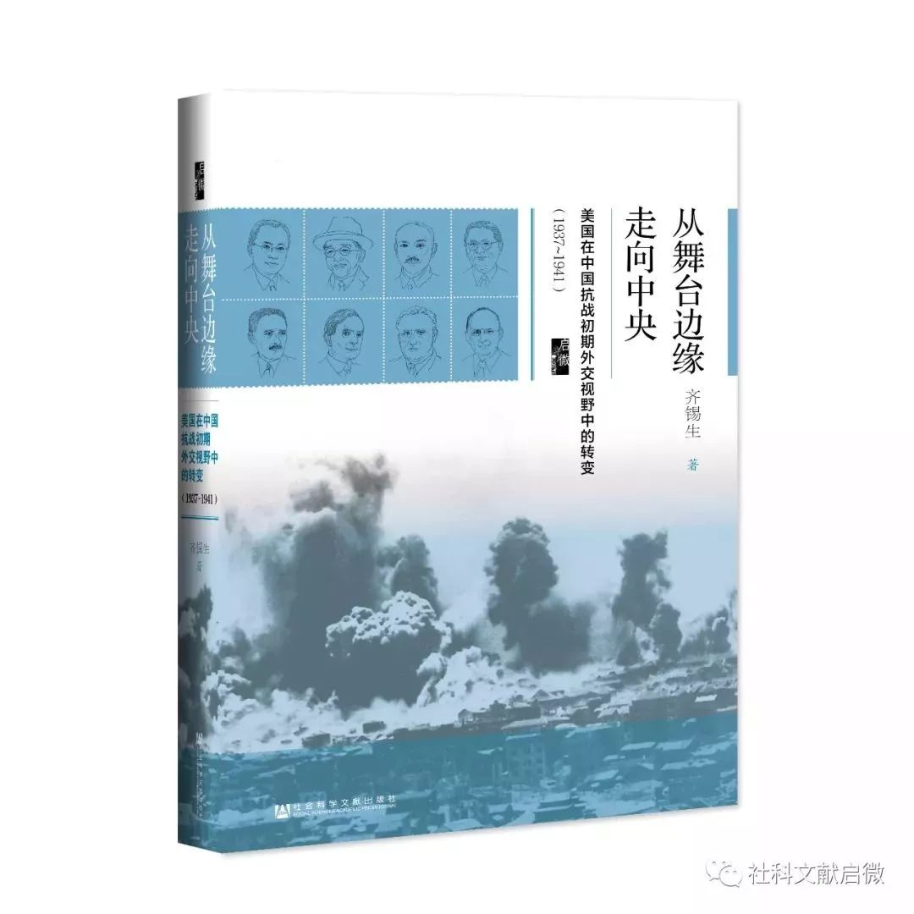

收录于合集


从舞台边缘走向中央
美国在中国抗战初期外交视野中的转变（1937~1941）
齐锡生 著
2018年9月出版
精装 • 536页
社会科学文献出版社•启微
中国的外交和外交官
有关1937~1941年中美关系的著作，甚少试图从中国的立场去探讨中国对美国的认知和政策取向。本书希望能够填补这个空缺，因此选择去关注中国的外交工作人员和他们外交工作的质量。
本书先后讨论过几位中国外交官和他们扮演的角色。本书主角包括胡适、陈光甫、宋子文和蒋介石，次要角色包括王宠惠、孔祥熙、王世杰和宋美龄等人。本书除了让这些人物能够对历史叙述加以充实外，还努力避免一个普遍趋势，那就是把他们分成两类——正面人物和负面人物。按照长期以来的惯例，胡适肯定是正面人物，而宋子文大概属于负面人物之列。
本书试图说明这种二分法过于简陋，因为要评鉴人物实际上非常复杂。胡适肯定受大多数美国人喜爱也被他的亲朋好友极力推崇，但是对中国抗战的贡献极为有限。宋子文在美国遭到不少人嫌恶也被国内某些舆论所诟病，但是对于中国抗战却做出了更大的贡献。本书所提供的资料希望可以帮助我们在评鉴历史人物时，能够力求持平而且多元化。
更重要的是，本书试图对于那些影响中国外交政策的因素能够做出更深入的分析，包括这些人的学识素养、品行个性，他们的世界观和对世局的分析能力，他们对于国际上行为准则的认识，他们到底认为应该如何“自处”和“相处”才算是合宜得体，以及他们对于国家利益的界定等因素在内。这些因素可以帮助我们了解为什么他们之间的行为能够如此不同，而他们宣称的目标又都是为了维护中国的国家利益。
本书也试图解释中国外交政策在决策过程和实质运作上重大的改变，从1937年抗战初起时的谨守传统型外交规范，转换成1940年以后强调个人外交的泼辣风格。
本书所列举的事例清楚显示，“个人外交”绝不是中方“不识大体”或是蓄意颠覆美国行政体系的计谋，而是中美元首的共同意愿，双方都想要找出一条更有效率的途径去加强彼此间的沟通。国务院的指责并不代表美方对中方整体的评价，只是宣泄它自己被罗斯福冷落的不平，不敢向罗斯福抗议，只能拿中国出气而已，不值学者小题大做。
作为一个群体而言，中国这些外交界人士可能是从19世纪以来，历届政府所凝聚的最具专才实学的人物。通过他们的努力，政府尽量洞察瞬息万变的国际局势，做出合理的判断和制定相应对策。这个群体对于国际大势的掌握远比此前几代的中国外交界人士要务实而准确。
事实上，大部分中国领袖对于国际事务表现出高度敏感，常能采用世界眼光去分析全球重要变化，而且有能力看出欧洲和亚洲各自面临危机的关联性。
因此，他们远在西方国家领袖尚未认识到局势严重性时，就预测到日本将入侵东南亚，并且试图推动国际性的合作计划。他们甚至在1939~1940年就已经开始思考抗战结束后的国土重建问题。
其结果是，中国政府在面临全球一连串天崩地裂的突发事件时，一直抗拒德国和意大利的引诱和日本的劝和（诱降），也压制住自己内心对于西方国家多年来的不公平待遇，以及在国际事务上罔顾道义出卖中国利益的劣迹所累积下来的极度怨愤，依然小心谨慎地固守中国本身的立场。
尽管西方国家大多数时间对中国视若无睹，但是中国依然下定决心要加入它们的阵营。只有等到美日战争爆发时，中国的政策才获得收成。
从个人质量上着眼，中国在美国的外交官和其他国家驻美代表相比，可谓毫无逊色。很少其他国家此时的驻美代表称得上是他们国内的第一流学者，或是对地主国的历史、政治、哲学和民情风俗的掌握，可以和胡适与宋子文相提并论。其他国家的使节也没有很多人的青少年时代是在美国度过，而且在美国社会的融入感可以与宋子文及其姐妹不相伯仲的。
在本书涵盖范围内，中美两个国家的外交政策质量，也可以在它们对于彼此的了解程度方面加以评估。诚然，中美两国此时有一个根本不同之点。美国是世界级强国，其一举一动足以影响全球事务，但是在很长一段时间内，它却下定决心不去发挥这个能量。中国则是亚洲弱国，其能力不足以自保，更遑论左右他人。而在此时，它正在遭受邻国的侵略。中国为了生存不得不学习以世界眼光去分析国际事务。
简单地说，美国是一个全球性强国，却埋首躲在自己狭小的地区里，而中国是一个地区性弱国，却不得不经常去关注全球性发展动态。这些压力使得中国处理外交事务的决策者，对于西方国家事务的关注程度，要远远大于西方国家对于亚洲事务的关注。
说到最后，一个国家外交政策的成败必然深受其国力所限制。当然，仅是握有军事和经济实力并不足以保证这个国家一定会做出明智的决策，但是它们可以部分地弥补劣质外交政策的不足。反过来说，一个弱国即使具有正确的外交政策，但是它的成功率很可能操在他人之手。高质量的外交政策或许能够弥补国力之不足，但是很少能够完全取代国力。
这个残酷的事实，有时会使强国领袖们看起来比弱国领袖们似乎要更明智，但是其实不然。因此，当弱小的中国扮演求援角色而强大的西方国家扮演施舍角色之时，中国领袖们实在不容易让旁观者为他们的行动击节赞赏。
不幸的是，在史学作品中时常出现一种现象，在有意无意的情况下把中美两国领袖们去做比较，然后推演出一些结论，认为中国领袖们眼光短浅、心智闭塞、缺乏理性、能力低落，看不清自己国家最重要利益之所在。在不少情况下，这些批评其实是根据美国官员的愤懑之词做出的，原因就是中国领袖们拒绝按照美国人给他们立下的规矩办事。而后世学者因为疏于治学和惰于思考，也跳不出这个窠臼。
一个更恰当的评鉴中国外交的方式，或许是去考察它的外交目标和成果之间的差距究竟有多大。1937年以后，中国政府最重要的目标就是运用一切外交手段去保证它可以进行抗战。虽然几乎没有一位中国领袖曾经负责任地说要在战场上击溃日本，但是他们认为只要中国能够持久抵抗，或许最终可以强迫日本知难而退放弃侵略。在此时刻，中国把全部外交精力都灌注在实现这个愿望之上，凌驾一切其他考虑。
中国政府也知道，仅靠中国本身国力无法达成此一愿望，而它又缺乏其他手段可以从别的国家取得支持。因此，它务实的指望是靠自己“苦撑”，等到国际事务有一天出现重大变化，创造对中国有利的条件。如果我们用这种尺度去衡量中国当时外交政策的话，或许可以得到一个比较中肯的结论。特别是当我们发现中国在推行它的外交政策时，并没有在关键时刻违背国际正义原则。比如说，它在处理阿比西尼亚（今埃塞俄比亚）和芬兰的被入侵事件时，宁可开罪强国也不背信弃义。
对于一个处于极端劣势的弱国而言，中国在四年抗战期间的成就诚属可圈可点。虽然中国求助于国际联盟和九国公约组织的努力归于失败，而它也无法从西方列强（如英国、法国）争取到有意义的援助，但是成功地从德国和苏联手中得到大量武器，直到1939年。
中国在1939~1940年所遭遇的重大挫折迫使它不得不转移外交重心，而重庆政府对于胡适和陈光甫两人争取外援成绩的不满，又使它不得不改弦易辙，派遣宋子文前往华盛顿。也正是由于中美两国领袖更密切的接触，导致了美国经济和军事援助的增加，使得中国抗战得以“撑”到珍珠港事件。
固然1941年底美日冲突并非由中国直接挑起，但是中国无疑扮演了一个重要的角色。正是由于中国的坚韧不拔和拒绝停战，才迫使日本不得不向其他地区搜求大量战略物资，去维持在中国的战事。不然的话，它就会被迫从广大中国占领区灰头土脸地撤退，使它宣称要以武力彻底摧毁中国的豪言壮语完全破产。
美国禁止战略物资输出日本的决定，又使日本不得不执行其南进政策，期使东南亚的丰富资源尽括囊中，而为了达到此目的，日本又需要进一步铲除南亚和东南亚的殖民体制。
设若中国在1937~1940年任何时间放弃抵抗而屈膝求和的话，则卢沟桥事件在历史上只不过是小事一桩，不致对日本和西方列强之间的关系产生巨大影响。设若中国在持续抗战一段时间之后，因筋疲力尽而臣服于日本的话，则日本在亚洲和欧洲殖民主义国家的对立中将逐渐取得上风。设若日本和西方国家之间的战争终究无法避免的话，则国力大增的日本将会是西方的劲敌。
幸运的是，在这些至关紧要的年份里，中国能够运用其外交政策找到国际政治、经济和军事支持的新来源。特别是它的对美外交政策，最初动机只是使中国本身能够维持抗战，最后却迫使日本和西方国家走上正面冲突的路途。在这个意义上，中国政府在这段时间中所推行的对美政策，甚至可以被视为成就卓越。
作者简介
齐锡生 ，芝加哥大学博士，主修国际关系和政治学，1967~1992年任教于美国北卡罗来纳大学，1992~2002年参与香港科技大学的建校工作并任历史系主任，研究兴趣包括中国近代以来的内政外交、国际关系理论和军备战略问题，作品《中国的军阀政治》《剑拔弩张的盟友》影响甚巨。
年轻时业余爱好包括做木工、修房子、修汽车、爬山、射击等，老来希望能够学会弹钢琴和说西班牙语，目前仍在做学生。
目录
序
第一章 摸索一个务实的对美外交政策
第二章 胡适受命出任驻美大使
第三章 1937~1939年胡适和陈光甫对中国对美政策的影响
第四章 寻求一个新的对美政策：1939~1940年来自各方的压力
第五章 1940年以后外交作风的改变
第六章 1940年下半年中美关系大幅扩展
第七章 1941年：美国迈向中国舞台中央
第八章 租借法案带来的希望和失望
第九章 最后的冲刺：中国政府在珍珠港事件中的努力
第十章 结论
参考文献
人名索引
后记
特别感谢
中国社会科学院近代史研究所档案馆、重庆中国三峡博物馆、复旦大学吴景平教授为本书提供图片支持！
更多阅读
国政学人 （ID：guozhengxueren)
为方便学人及时阅读高质量文章
别忘把国政学人设置 星标 哦~